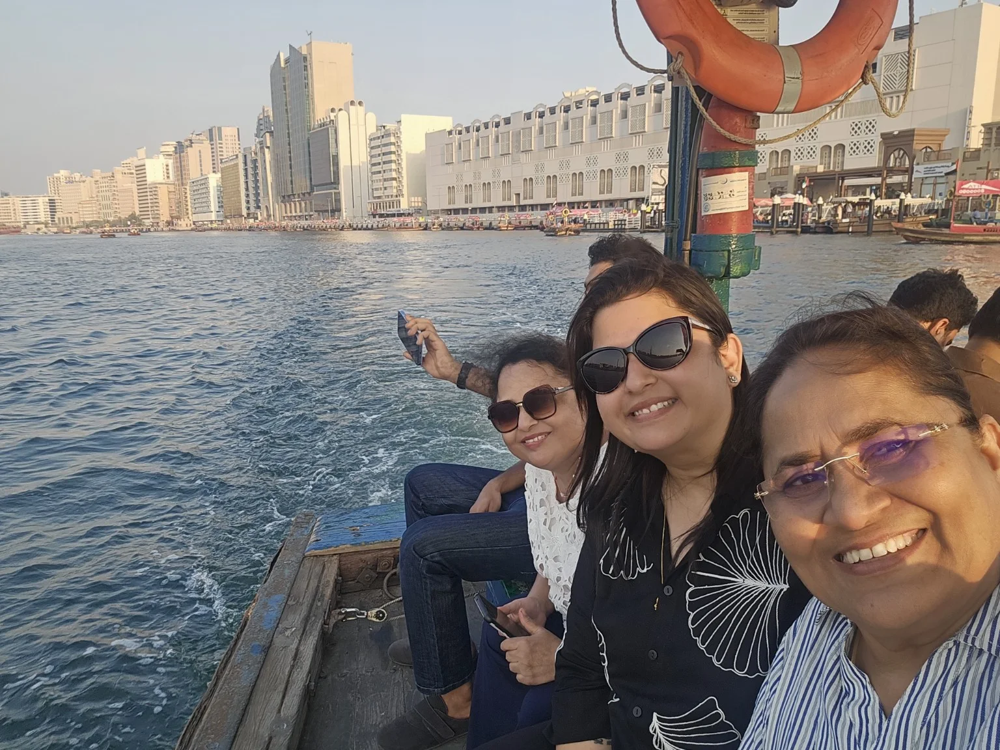
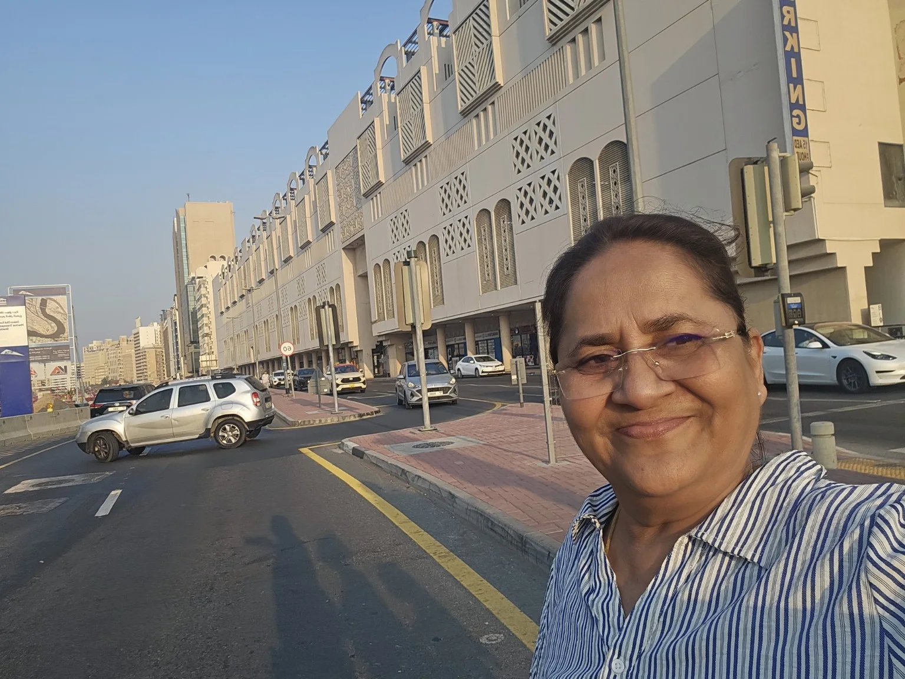
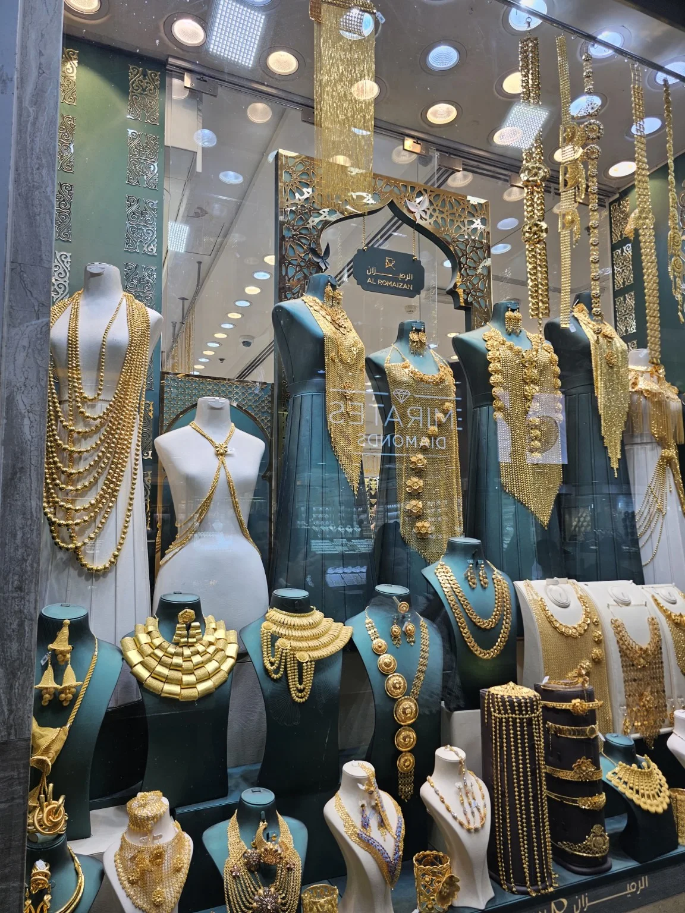
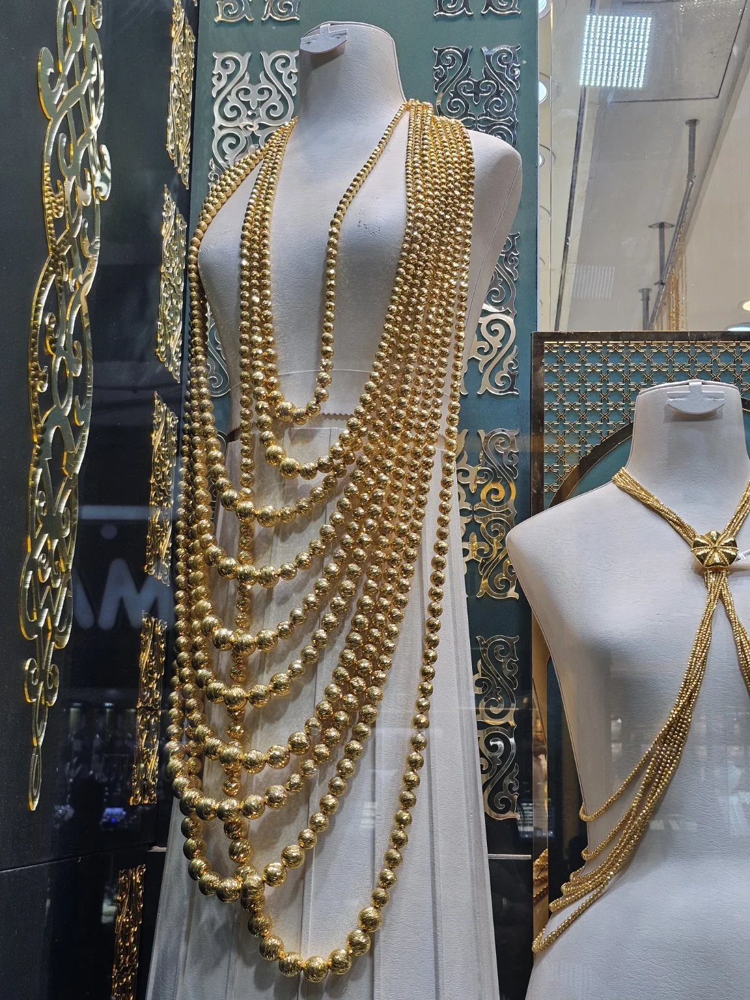
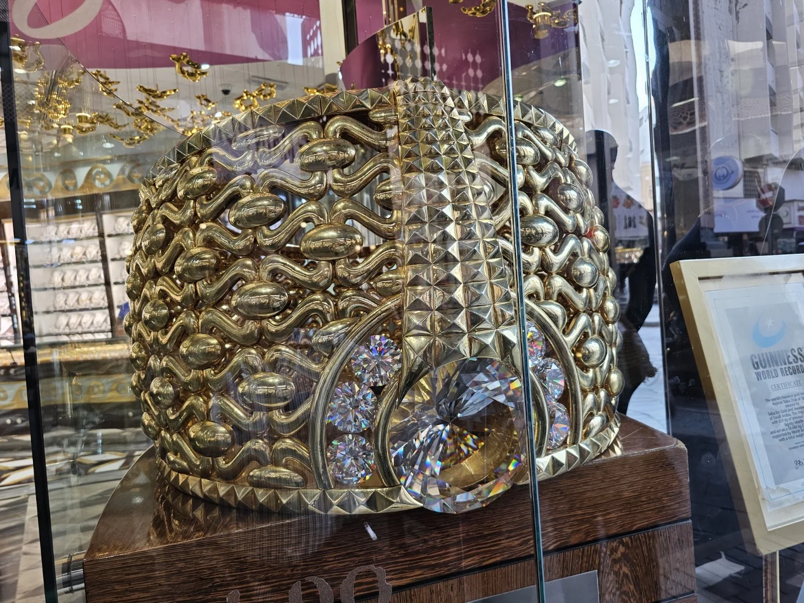
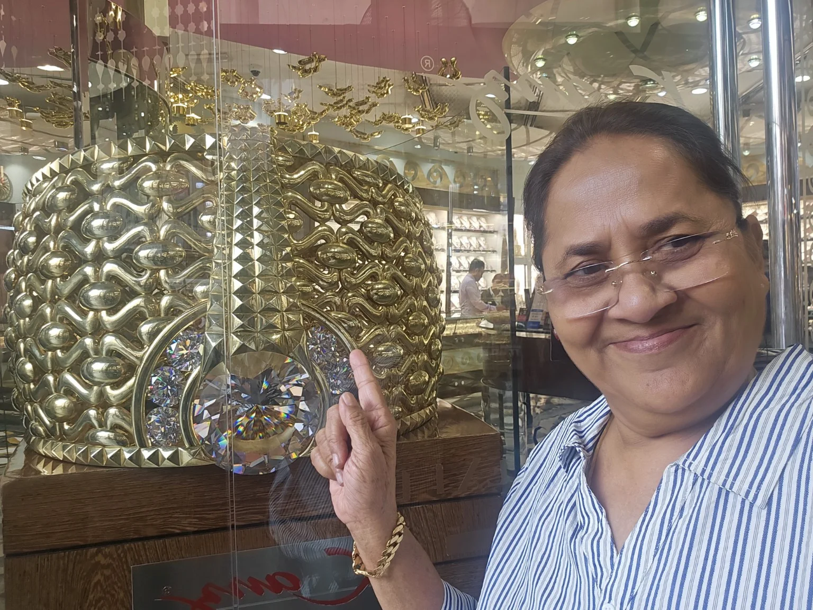
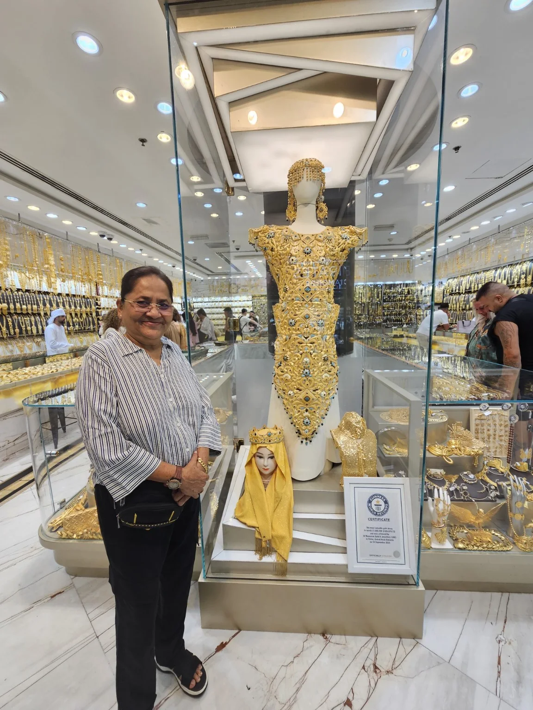

दुबईतील आमच्या प्रवासाचा आज पाचवा दिवस. कालचा दिवस आम्ही जाणीवपूर्वक अगदी निवांत ठेवला होता. सकाळपासून कुठेही घाईघाईने जायचे नाही, असे ठरवून दुपारी साडेतीन वाजेपर्यंत आम्ही हॉटेलमध्ये आराम केला. सततच्या भटकंतीनंतर अशी थोडी विश्रांती खूपच छान वाटली.
साडेतीन वाजता आम्हाला Land Cruiser गाडी पोहोचवण्यासाठी आली. आम्ही Deira भागातून प्रसिद्ध Gold Souk कडे निघालो. पुढचा दिवस मात्र फक्त खरेदीचा नव्हता; त्यात दुबईच्या जुन्या भागातील पाण्यावरचा अब्रा राईडचा सुंदर अनुभवही होता.
🚤 अब्रा राईड – Deira ते Gold Souk
Deira भागातून Gold Souk कडे जाण्यासाठी आम्ही अब्रा राईड केली. ‘Abra’ ही दुबईतील पारंपरिक छोटी बोट आहे आणि जुन्या दुबईमध्ये एका ठिकाणाहून दुसऱ्या ठिकाणी जाण्यासाठी तिचा वापर केला जातो. त्यामुळे त्या छोट्याशा बोटीचा प्रवास आमच्यासाठी एक वेगळाच आणि आनंददायी अनुभव ठरला.
पाण्यावरून बोट पुढे जात असताना आजूबाजूचा किनारा, जुन्या इमारती, गजबजलेला परिसर आणि पाण्यावर उमटणारे लाटांचे तरंग पाहताना आम्ही खूप आनंद घेतला. आम्ही फोटो काढले, गप्पा मारल्या आणि या सुंदर क्षणांचा मनमुराद आनंद घेतला.

💛 Gold Souk – सोन्याची झगमगती दुनिया
Gold Souk मध्ये पोहोचल्यानंतर माझे डोळे अक्षरशः दिपून गेले. आजूबाजूला नजर जाईल तिथे सोन्याची झळाळी, सुंदर दागिने आणि अप्रतिम कलाकुसर दिसत होती. प्रत्येक दुकानाची स्वतःची एक वेगळी ओळख आणि वैशिष्ट्य होते.

मोठमोठ्या शोकेसमध्ये ठेवलेले हार, कंठहार, बांगड्या, कानातले, कमरपट्टे आणि वेगवेगळ्या प्रकारचे अलंकार पाहताना मला सतत वाटत होते—एवढे सारे सोने एकाच ठिकाणी कसे काय असू शकते!


👑 63 किलोचा मुकुट – Guinness World Records
या भेटीतील सर्वात विशेष आणि आश्चर्यचकित करणारी गोष्ट म्हणजे सुमारे 63 किलो वजनाचा भव्य सोन्याचा मुकुट पाहायला मिळाला. त्याची Guinness World Records मध्ये नोंद असल्याचे तेथे प्रदर्शित केलेले प्रमाणपत्रही दिसत होते.
एवढा मोठा आणि भव्य सोन्याचा मुकुट प्रत्यक्ष डोळ्यांनी पाहताना मला अक्षरशः विश्वासच बसत नव्हता. त्याच्या कलाकुसरीकडे पाहत राहावे असे वाटत होते. त्या मुकुटासोबत फोटो काढण्याचा मोह आम्हालाही आवरला नाही.


✨ प्रत्येक दुकानाची वेगळीच झळाळी
त्यानंतर आम्ही अनेक दुकाने पाहिली. कुठे लांबलचक सोन्याचे हार, कुठे मोत्यांसारख्या मण्यांचे सुंदर नेकलेस, तर कुठे राजेशाही थाटाचे भव्य अलंकार! प्रत्येक दुकानात काही ना काही वेगळे वैशिष्ट्य होते.

🛍️ Meena Bazaar मधील खरेदी
Gold Souk मधून आम्ही पुढे Meena Bazaar कडे गेलो. तिथे वातावरण अगदी वेगळे आणि उत्साहाने भरलेले होते. दुकानांमध्ये विविध प्रकारच्या वस्तू, घड्याळे आणि छोट्या-मोठ्या वस्तू पाहायला मिळत होत्या.
तिथे आम्ही मनसोक्त खरेदी केली. मी स्वतः तीन-चार छान घड्याळे घेतली आणि काही छोट्या-छोट्या वस्तूही खरेदी केल्या. खरेदी करताना खूप आनंद झाला आणि वेळ कसा निघून गेला ते कळलेच नाही.
🍽️ भारतीय जेवणाची चव
दिवसभर फिरल्यानंतर आम्ही एका भारतीय खाद्यपदार्थांसाठी प्रसिद्ध असलेल्या हॉटेलमध्ये छानपैकी जेवण केले. परदेशात फिरताना आपल्या भारतीय चवीचे जेवण मिळाले की मनाला एक वेगळेच समाधान मिळते. मी, जोग आणि पल्लवी—आम्ही तिघांनीही खूप आनंदाने जेवण केले आणि दिवसभराच्या भटकंतीच्या गप्पा मारल्या.
🚇 टॅक्सी आणि मेट्रोने Deira कडे परत
रात्र झाल्यानंतर आम्ही आधी टॅक्सीने मेट्रो स्टेशनवर आलो. त्यानंतर दुबईच्या मेट्रोने Deira येथे परतलो. ज्या भागात आमचे Ramdas Hotel आहे, त्या परिसराला Deira असे म्हणतात. दिवसभर Land Cruiser, अब्रा राईड, Gold Souk, Meena Bazaar आणि शेवटी Metro—एकाच दिवसात दुबईचे अनेक रंग अनुभवायला मिळाले.
❤️ आठवणीत राहणारा पाचवा दिवस
कालचा दिवस माझ्यासाठी खूपच आनंदाचा आणि संस्मरणीय ठरला. दुपारपर्यंत निवांत आराम, त्यानंतर Land Cruiserचा प्रवास, Deira भागातून अब्रा राईड, डोळे दिपवणारा Gold Souk, 63 किलोचा भव्य मुकुट, सुंदर सोन्याचे दागिने, Meena Bazaar मधील खरेदी, माझी तीन-चार घड्याळे, भारतीय जेवण आणि शेवटी Metroचा प्रवास—या सगळ्यामुळे दिवस खरोखरच अविस्मरणीय झाला.
दिवस संपताना मनात एकच भावना होती—‘आजचा दिवस खरंच खूप छान गेला... आणि या आठवणी आयुष्यभर मनात चमकत राहतील!’ ✨💛🌊